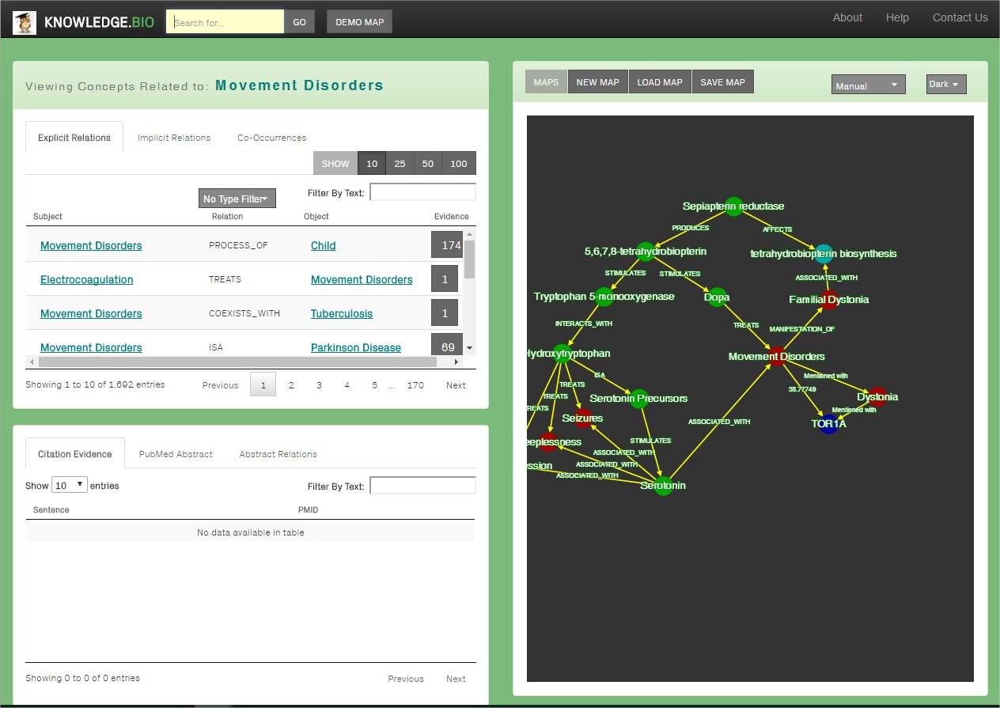
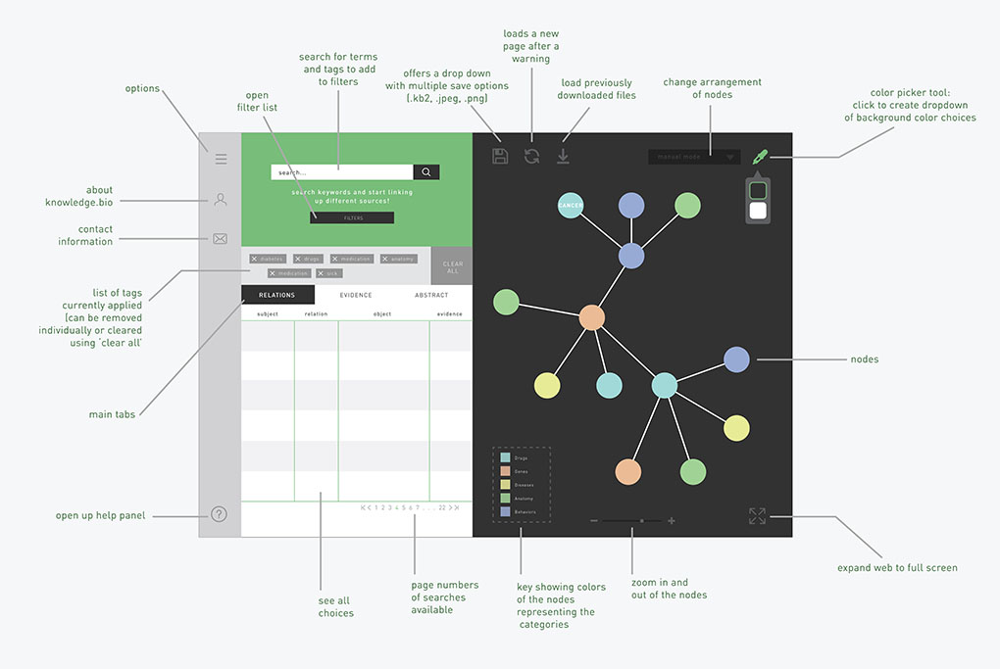
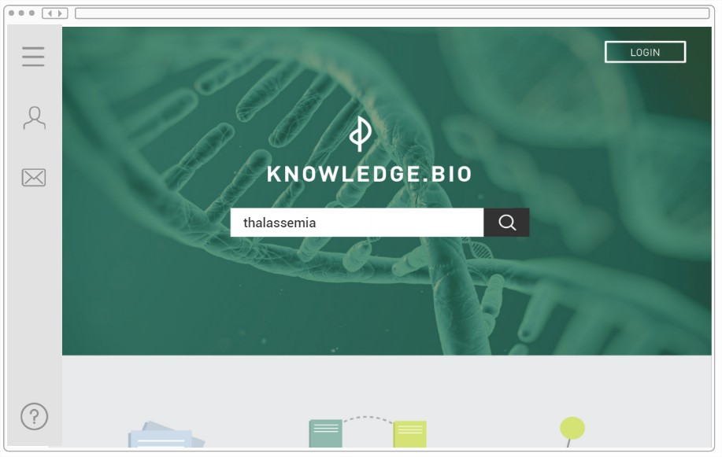
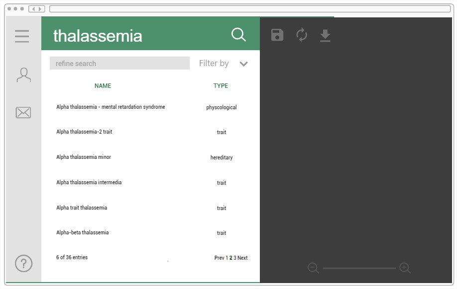
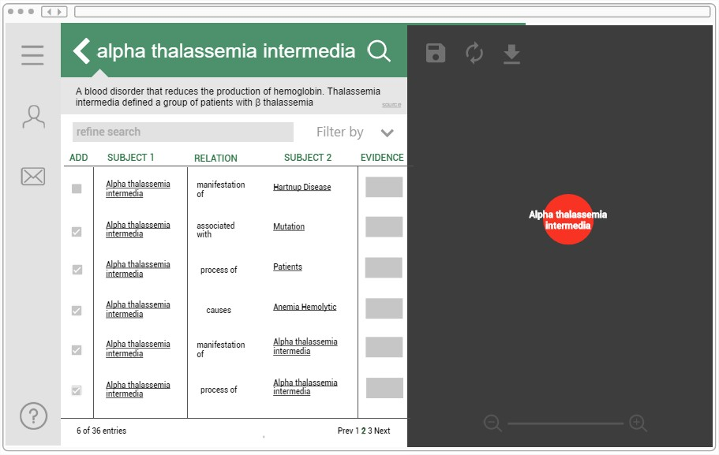
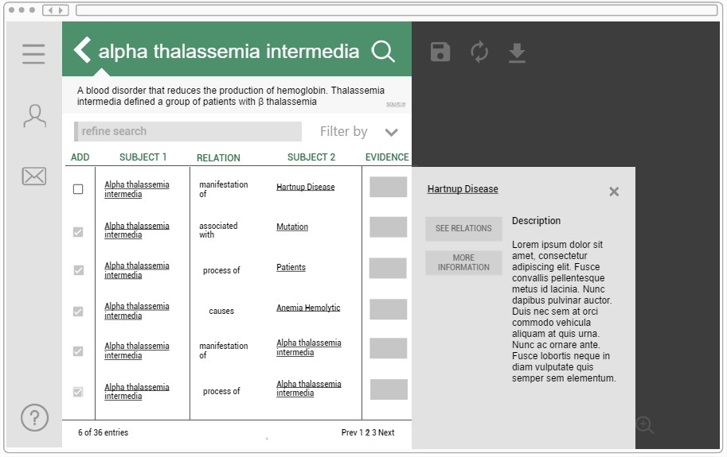

Knowledge.bio is a biology database, online application that allows users to search for concept relations between terminologies. As the only designer working on the website in a small company called Star Informatics,
a majority of my time was spent coming up with new design ideas, improving old functionalities and conducting user tests in order to discover any bugs, missing functionalities or general usability issues.
When I joined the team, I learned I was going to be the first and only designer on the job working with coders who were mainly working back-end. There were a lot of usability issues, from miss-directing links, to un-intuitive buttons
as well as a confusing navigation system. I was tasked with figuring out those issues, creating a better interface as well as fixing the usability of the site.

Knowledge.bio site before I joined
USER TESTING
After gathering usability issues and conducting user testing, as well as researching about the best way to deal with hierarchy, I did some visual prototypes on illustrator to showcase possible layouts, color palettes and functions
that knowledge.bio should be offering.


illustrator mock-ups of site design direction after careful user studies
PROTOTYPING
I redesigned the logo and created infographics for the website, trying to capture a simple, yet functional aesthetic using flat design. I also documented user experiences and wrote out content for the site as well



protptype made in proto.io
CHALLENGES
However, an issue I faced was that while I could design the website, implementing it was another issue as the front-end coding was also a co-op student with not too much knowledge on the specific coding style. This led to a lot of
design alterations to make it more feasible for the front-end coder. Another challenge that arose for me was communication. Since I was working with mostly programmers, I needed to make sure I had user experiences to back me up
on why design changes were needed for the site.
REFLECTION
I found this project to be difficult, but rewarding. I had to do a lot of my own time management and coordination as I mainly worked from home but the experience taught me a lot about self management as well as how to find resources
to learn from independently. Since I was the only designer in the team, I also learned a lot about how to communicate the importance of design and how to implement it in their terminology so they can understand. While this site
is still in the process of being made, I am glad I was able to contribute in both usability and aesthetics.